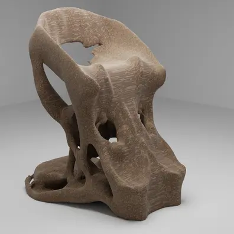
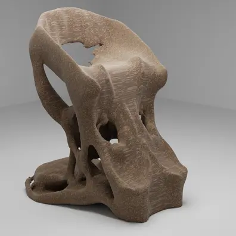
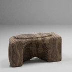
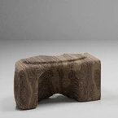
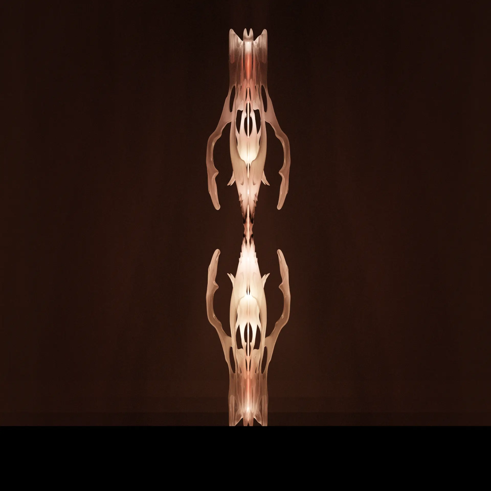
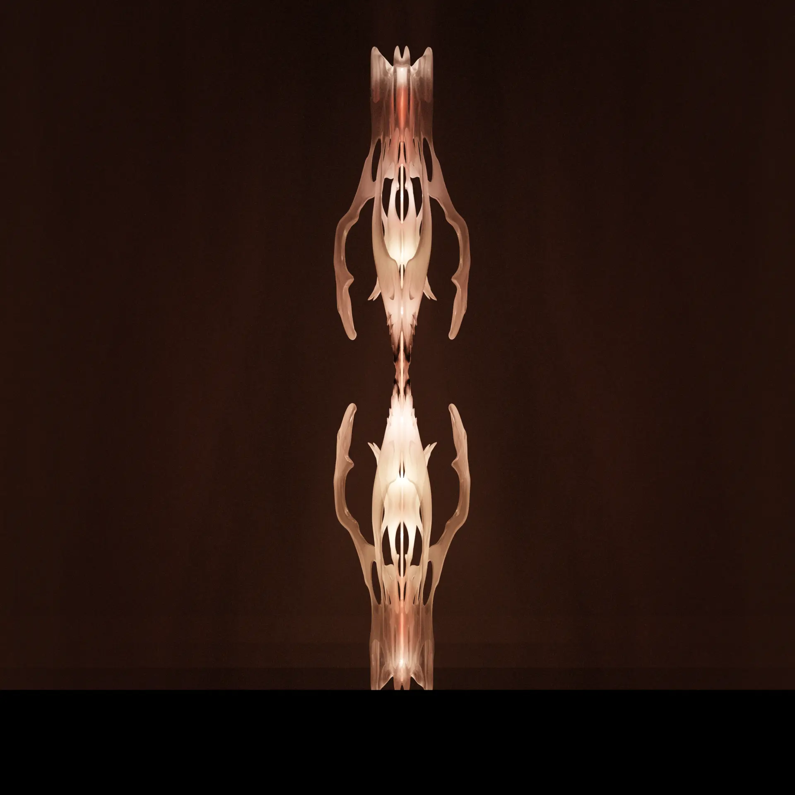

EN:
Gabriel Lecurieux-Lafferronnay,
I'm 21 years old and come from the Paris region.
I'm a young artist and designer in the field of digital creation.
Since June 2023,
I hold a DNA (diplôme national d'art)
awarded by the École supérieure d'art et design de Saint-Étienne (France).
I'm studying for a Master 1 in digital creation at the same school.
As part of my studies
I work in object design and digital graphic arts.
I focus on the notions of space, artefact, temporality and interactivity,
guided by the principles of mind, body and space that characterise reality as we perceive it.
All these reflections stem from my passion for philosophical and phenomenological questions.
So, throughout my creative career, I've been developing windows of experimentation,
feeding them with meditation, contemplation, reading,
formal research and fascination with events,
My aim is to push back the boundaries of the innate, the spontaneous and the obvious.
This sensitive evidence manifests itself when we are confronted with things that happen.
My approach is based on a process of revelation, accentuation, hybridisation
and degradation of the mechanics studied and questioned, which are often mysterious
because of the multiple constraints induced by human physicality.
FR:
Gabriel Lecurieux-Lafferronnay,
Âgé de 21 ans et originaire de la région parisienne.
Je suis un jeune artiste designer dans les domaines de la création numérique.
Depuis juin 2023,
je suis titulaire d'une DNA (diplôme national d'art)
décerné par l'École supérieure d'art et design de Saint-Étienne (France).
J'étudie en master 1 de la mention création numérique de cette même école.
Dans le cadre de mes études,
je pratique le design d'objet et les arts graphiques numériques.
J'axe mes réflexions sur les notions d'espace, d'artefact, de temporalité et d'interactivité,
guidé par les principes de l'esprit, du corps et de l'espace, qui caractérisent la réalité telle qu'on la perçoit.
Toutes ces réflexions découlent de mon engouement pour les questions philosophiques et phénoménologiques.
Ainsi, tout au long de mon parcours créatif, je développe des fenêtres d'expérimentations,
les alimentant au fil des méditations, contemplations, lectures,
recherches formelles et fascinations pour les événements,
avec pour volonté de repousser les limites de l'inné, du spontané et de l'évidence sensible.
Cette évidence sensible se manifeste lorsque nous sommes confrontés aux choses qui se produisent.
Mon approche repose sur une démarche de révélation, d'accentuation, d'hybridation
et de dégradation des mécaniques étudiées et remises en question, souvent mystérieuses
en raison des multiples contraintes induites par la corporalité humaine.


 



 



 
